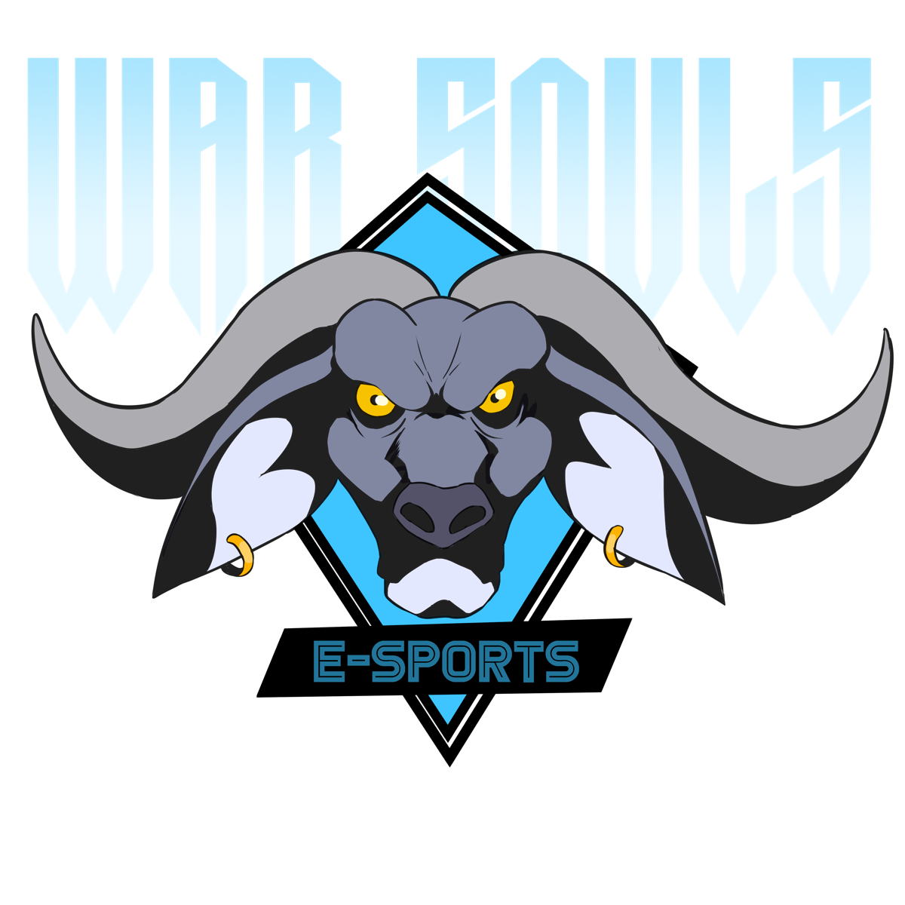
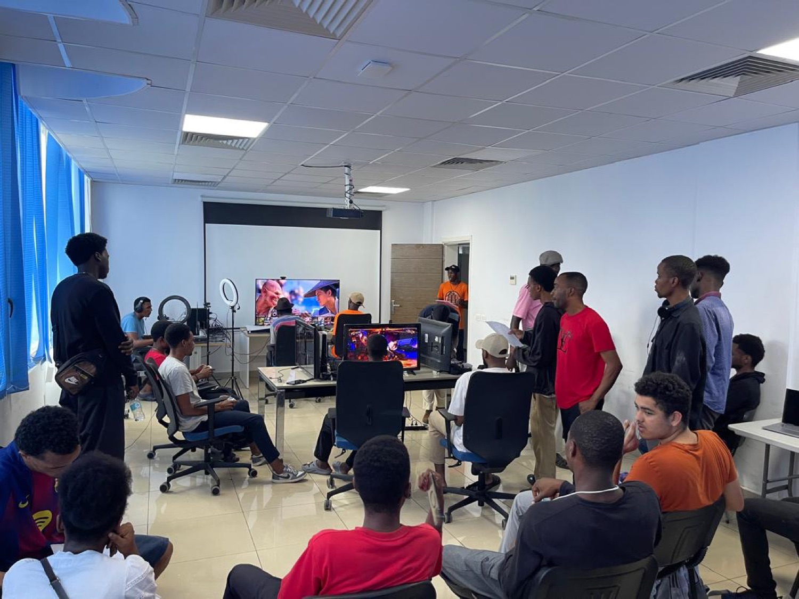
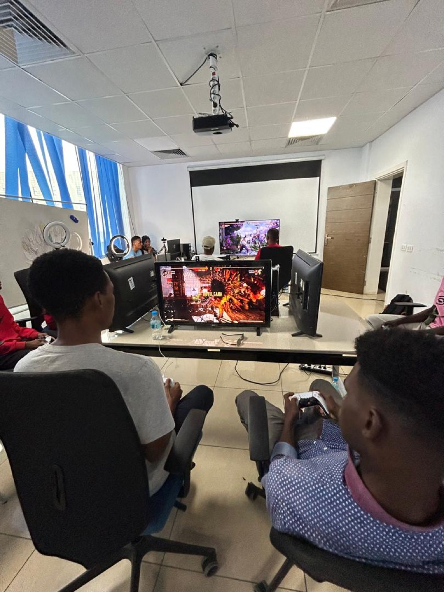
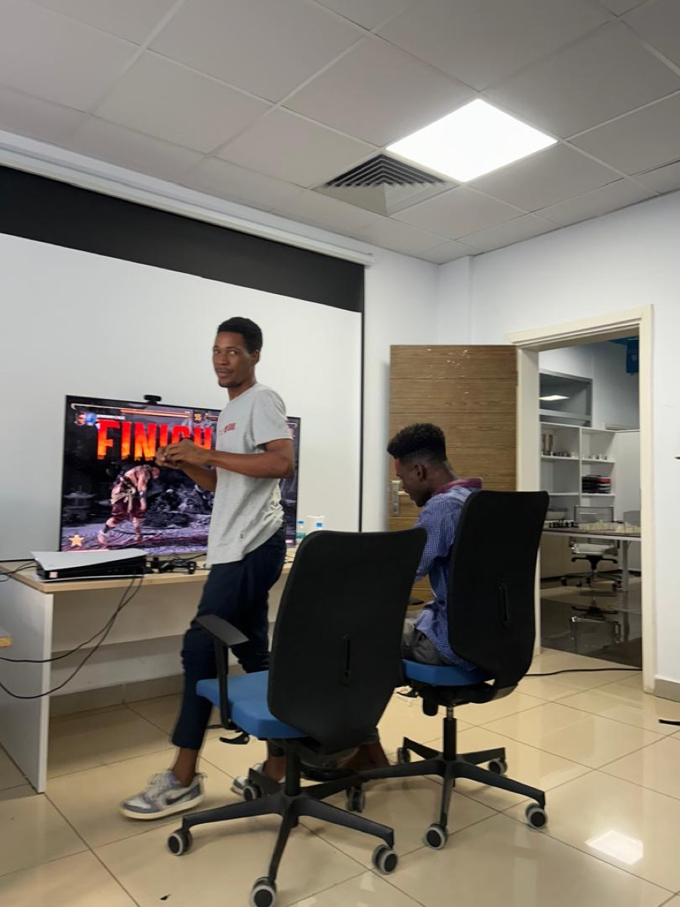

Malabo, Guinea Ecuatorial
La sala está abierta
War Souls es un club de deportes electrónicos fundado el 18 de agosto de 2024 en Malabo. Su objetivo es promover los videojuegos en todo el ámbito nacional. Tiene un local con puestos de juego abierto a socios y visitantes, donde se juega a Tekken, Mortal Kombat, FC y otros títulos.

- Fundación
- 18 de agosto de 2024
- Sede
- Malabo
- Juegos
- Tekken, MK, FC y más

Un club
con estatutos
War Souls es una asociación sin ánimo de lucro fundada el 18 de agosto de 2024 y con sede en Malabo. Su objetivo es promover los videojuegos en todo el ámbito nacional y, con ellos, organizar, difundir y profesionalizar los deportes electrónicos en Guinea Ecuatorial.
Los estatutos fijan un ámbito de actuación nacional e internacional y una asamblea general que elige a la junta directiva. La junta organiza la competición, administra el club y responde ante los socios. War Souls colabora con AEGDE, la asociación nacional de deportes electrónicos, que difunde la escena del país y emite los directos.
- Competir Organizar competiciones de deportes electrónicos en todo el país.
- Representar Defender los intereses de jugadores, aficionados y agentes del sector.
- Profesionalizar Crear marcos de trabajo para que la escena crezca con criterio.
- Cuidar el juego Supervisar la práctica con equidad y proteger a quien compite.
Supervisar la práctica de los deportes electrónicos con un espíritu de equidad y desarrollo humano, en línea con los valores del olimpismo.
Almas
que luchan
WAR es guerra. SOULS, almas. Almas que luchan por sus sueños.
Misión
Unir a los jóvenes talentosos de Guinea Ecuatorial y darles un espacio donde puedan crecer, demostrar su talento y representar a nuestro país con orgullo.
Visión
Convertirnos en el club más grande y respetado de Guinea Ecuatorial y llevar el nombre de War Souls más allá de nuestras fronteras.
Nuestros objetivos
-
01
Unidad
Crear una familia fuerte, donde todos se apoyan.
-
02
Talento
Descubrir y potenciar el talento de nuestros miembros.
-
03
Disciplina
Formar jóvenes con respeto, compromiso y mentalidad ganadora.
-
04
Representación
Representar a Guinea Ecuatorial en competiciones, eventos y redes sociales.
-
05
Crecimiento
Ayudar a cada miembro a crecer personal y profesionalmente.
-
06
Comunidad
Hacer actividades que ayuden a nuestra comunidad en Malabo y en todo el país.
No nacimos para perder.
Nacimos para luchar.
Dos fechas
del club
La fundación y la asamblea en la que se presentaron los estatutos y el reparto de tareas.
-
Fundación
El club se constituye en Malabo como asociación sin ánimo de lucro dedicada a los deportes electrónicos.
-
Asamblea general
Se presentan los estatutos y las asignaciones de la junta directiva. El club trabaja en la afiliación a la federación y en el registro ante el Ministerio de Educación, Enseñanza Universitaria y Deportes.
Aquí
se entrena
Un local en Malabo con puestos de juego, consolas y pantalla grande. Es el lugar donde el club juega, entrena y reúne a socios y visitantes.
El acceso a la sala y las membresías están abiertos a socios y visitantes. Quien empieza puede venir a probar: siempre hay alguien dispuesto a explicar cómo funciona el club.
Acceso gratuito con contrato. Quien haya firmado un contrato con el club entra a la sala sin pagar. El resto de visitantes puede preguntar en la sala por las condiciones de acceso y membresía.


Quién
lo lleva
La junta directiva la elige la asamblea general. Estas son las personas que responden por el club y las áreas que lo sostienen.
- Presidencia
- Benjamín Ndong Ona Ada
- Vicepresidencias
- Elvis Gabriel Enguru Nsogo Mbengono y Crisantos Nicolás Obiang Abeme
- Secretaría
- José María Rodríguez Ndong Nvo Ayang
- Tesorería
- David Nguema Nve Mangue
- Vocalías
- Sebastián y Amadeo Nze Ñengono
- Fundadores
- Miguel Ángel Ebang, Elvis Gabriel Enguru Nsogo Mbengono y Jared Ndong Endaman Alene
Deportiva
Cuerpo técnico y jugadores. Resultados de ligas y competiciones, y la política deportiva del club.
Administrativa
Presupuesto, personal, compras, contabilidad y seguimiento de tareas.
Comunicación
Medios, redes sociales, comunicación interna y comunidad.
Comercial
Patrocinios, venta de servicios y alianzas con otras entidades.
Ficha
del club
- Nombre
- War Souls E-Sports
- Fundación
- 18 de agosto de 2024
- Sede
- Malabo, Guinea Ecuatorial
- Ámbito
- Nacional e internacional
- Juegos
- Tekken, Mortal Kombat, FC y más
- Naturaleza
- Asociación sin ánimo de lucro
- Lema
- No nacimos para perder. Nacimos para luchar.
- Presidencia
- Benjamín Ndong Ona Ada
- Asamblea general
- 9 miembros (acta de enero de 2026)
- Colaboración
- Asociación AEGDE
- Teléfono
- 222-605170 Orange
- Correo
- warsoulsclub@gmail.com